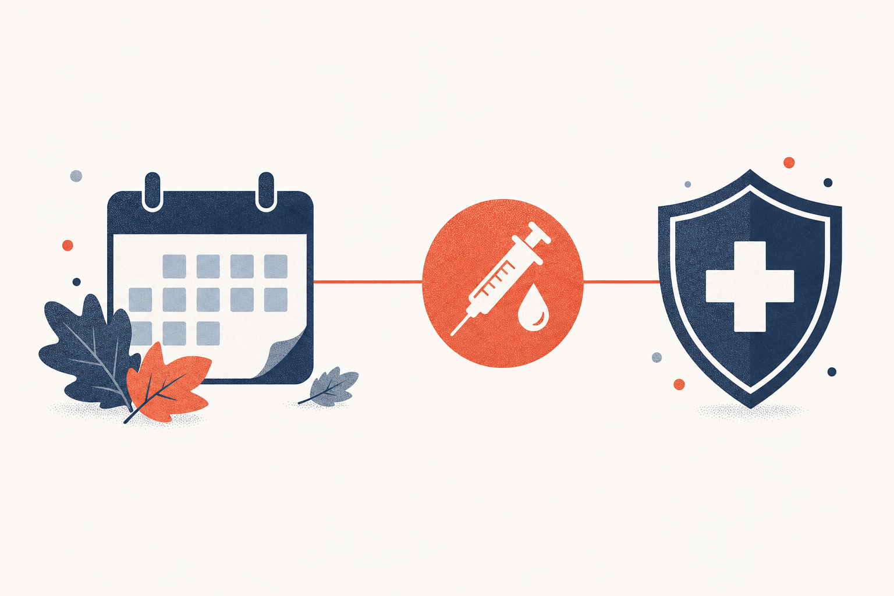

Key Takeaways
- Flu season in the U.S. runs roughly October through May, peaking most often between December and February.[1]
- Everyone 6 months and older should get a flu vaccine each year, ideally by the end of October.[3]
- Flu vaccine effectiveness ranges from 40% to 60% in well-matched seasons; even when it does not prevent illness, it reduces severity.[5]
- The flu shot cannot cause the flu; side effects are mild (sore arm, low fever) and pass within a few days.[4]
- Flu, cold, and COVID-19 share symptoms; the key differentiator is how suddenly flu hits and how severe the fever and body aches are.[6]
- Vaccination is the single best prevention; handwashing and staying home when sick also help.[7]
- Seek emergency care for difficulty breathing, chest pain, confusion, or symptoms that improve then return with fever.[6]

Every year, roughly between October and May, influenza surges across the United States. During the 2024-2025 season alone, the CDC estimated 51 million illnesses, 710,000 hospitalizations, and 45,000 deaths.[8] Most of that burden is preventable, or at least reducible, with a single annual vaccine that most people can get at a pharmacy in minutes.
Yet every fall the same questions surface: When does flu season actually start? Is it too late to get the shot? Can the shot give me the flu? How do I know if this is flu, a cold, or COVID? This guide answers those questions directly, using the CDC's current recommendations and the published evidence on vaccine effectiveness. It is the seasonal companion to our Influenza and Common Cold guide, which covers symptoms and antiviral treatment in depth.
When Does Flu Season Start and End?
In the United States, flu season typically begins in October, peaks between December and February, and can last as late as May.[1] Influenza viruses circulate year-round at low levels, but they spread far more efficiently in the fall and winter, when people gather indoors and the air is drier.
The exact timing shifts from year to year. Some seasons peak early, in December; others peak late, in February or even March. The CDC tracks this in real time through its FluView surveillance system, which reports influenza-like-illness (ILI) activity by state each week.[10] If you want to know how active flu is in your area right now, that is the source to check.
For planning purposes, the practical takeaway is simple: flu activity usually starts climbing in October, and the window to get vaccinated before the peak is September through early November.
Flu Season Months and Peak
Flu activity most often peaks in February, though December and January are close behind.[1] The curve below shows the typical seasonal pattern: a slow rise in October and November, a sharp climb through December, a peak in January and February, then a steady decline through March, April, and May.
This seasonality is why the CDC recommends getting vaccinated by the end of October. It takes about two weeks after vaccination for protective antibodies to develop, so an October shot means you are protected before the December-to-February peak arrives.[3]
How Bad Is Flu Season This Year?
The short answer is that it is too early to know for the 2026-2027 season, which is just beginning. Flu severity varies widely from year to year depending on which strains circulate and how well the vaccine matches them. The 2024-2025 season was substantial by any measure:
These are CDC estimates, not exact counts, because most people with flu are never tested or reported.[8] For a current picture of how this season is unfolding, the CDC's Weekly U.S. Influenza Surveillance Report (FluView) publishes updated activity levels, hospitalizations, and deaths each week during the season.[10]
Flu Shot: Who Should Get It and When
The CDC recommends that everyone 6 months and older get a flu vaccine every season, with rare exceptions.[3] The ideal timing is by the end of October, but vaccination should continue as long as flu viruses are circulating in your community.
Vaccination is especially important for people at higher risk of serious flu complications, and for the people around them:
| Higher-risk groups | Why vaccination matters |
|---|---|
| Adults 65 and older | Account for the majority of flu hospitalizations and deaths; higher-dose and adjuvanted vaccines are available for this group.[3] |
| Children under 5, especially under 2 | Young children are at higher risk of serious complications; children under 6 months are too young to be vaccinated, so caregivers should be.[3] |
| Pregnant people | Pregnancy raises the risk of severe flu; vaccination also passes protection to the baby for months after birth.[3] |
| People with chronic conditions | Asthma, diabetes, heart disease, and lung disease all increase the risk of flu complications.[3] |
| Caregivers and health care workers | Protecting yourself protects the high-risk people you live with or care for.[3] |
For the 2025-2026 season, the CDC recommends single-dose, thimerosal-free formulations for children, pregnant people, and adults.[3] If you have an egg allergy, most flu vaccines are still safe, but tell your clinician so they can select the right formulation.
How Well Does the Flu Shot Work?
Flu vaccine effectiveness is genuinely variable, and it is worth being honest about that. In seasons when the vaccine is well-matched to the circulating strains, it reduces the risk of flu illness by about 40% to 60%. In mismatched seasons, effectiveness can drop below that range.[2][5]
Two things matter more than the headline number. First, even when the vaccine does not prevent infection, it consistently reduces the severity of illness and the risk of hospitalization and death.[5] Second, the vaccine's protection is strongest in the months right after vaccination, which is why timing it before the peak matters.
Flu Shot Side Effects
The most common concern people raise is whether the flu shot can give you the flu. It cannot. Flu shots are made with inactivated (killed) virus or a single viral protein, neither of which can cause infection. The nasal spray vaccine contains weakened live virus that cannot cause flu in healthy people.[4][9]
Side effects are generally mild and resolve on their own within a few days:
| Side effect | How common | What to expect |
|---|---|---|
| Soreness, redness, or swelling at the injection site | Common | Usually lasts 1 to 2 days; a cool compress helps.[4] |
| Low-grade fever | Occasional | Mild and short-lived; not the flu.[4] |
| Mild body aches or fatigue | Occasional | Resolves within a day or two.[4] |
| Serious allergic reaction | Very rare | Seek immediate care; people with a history of severe reaction to a vaccine component should discuss alternatives.[4] |
Many people report no side effects at all. When they do occur, they are a sign the immune system is responding to the vaccine, not that you are getting sick.[4]
Is It Too Late to Get the Flu Shot?
Generally, no. The CDC recommends continuing to get vaccinated as long as flu viruses are circulating, even into January or later, because flu activity can last as late as May.[3] The earlier you get it, the better, since protection takes about two weeks to build and the season peaks in winter. But a late shot still protects you through the tail of the season, and it protects the higher-risk people around you.
The one exception is if you are already sick with a moderate or severe illness: wait until you recover before getting vaccinated, so your immune system can respond fully.[3]
Flu vs Cold vs COVID-19 vs RSV
Flu, colds, COVID-19, and RSV are all respiratory viruses with overlapping symptoms, which makes self-diagnosis unreliable. The most useful signal is how the illness starts and how severe it feels:[11]
| Feature | Common cold | Flu | COVID-19 |
|---|---|---|---|
| Onset | Gradual, over 1 to 3 days | Sudden, often within hours | Gradual or sudden |
| Fever | Rare | Common, often high | Common |
| Body aches | Slight | Common, often severe | Common |
| Fatigue | Sometimes | Usual, can be profound | Common |
| Sneezing / stuffy nose | Common | Sometimes | Sometimes |
| Sore throat | Common | Sometimes | Common |
| Cough | Mild to moderate | Common, can be severe | Common |
| Loss of taste or smell | Rare | Rare | More common |
Flu and COVID-19 in particular are nearly impossible to tell apart by symptoms alone, and both can be serious. The only reliable way to distinguish them is testing, which is why clinicians test for both during respiratory season.[6] RSV causes similar cold-like symptoms and is most concerning in infants and older adults.
How to Prevent the Flu
The single best way to reduce your risk of flu and its complications is to get vaccinated every year.[7] Beyond vaccination, the same habits that reduce all respiratory viruses apply:
- Avoid close contact with people who are sick, and stay home when you are sick.[7]
- Cover your coughs and sneezes with a tissue or your elbow, not your hands.[7]
- Wash your hands often with soap and water, or use hand sanitizer when soap is not available.[7]
- Avoid touching your eyes, nose, and mouth, which is how germs enter your body.[7]
- Clean frequently touched surfaces at home, work, and school, especially when someone is ill.[7]
If you do get sick, antiviral medications like oseltamivir (Tamiflu) can shorten the illness when started within 48 hours, and they are especially important for high-risk people. Our Influenza and Common Cold guide covers treatment in detail.
When to See a Doctor
Most people with flu recover at home with rest and fluids. Seek emergency care if you experience any of the following:[6]
- Difficulty breathing or shortness of breath
- Persistent chest pain or pressure
- Confusion or difficulty staying awake
- Severe or persistent vomiting
- Symptoms that improve, then return with fever and a worse cough
People at higher risk of complications should contact a clinician early in the illness, because antivirals work best within the first 48 hours.[6] In children, watch for fast or labored breathing, bluish lips or face, not drinking enough fluids, or being unusually hard to wake.
Frequently Asked Questions
In the United States, flu season typically runs from October through May. Flu activity most often peaks between December and February, though the exact timing varies from year to year.[1]
The CDC recommends getting vaccinated by the end of October, before flu activity picks up. But vaccination is still beneficial later in the season, as long as flu viruses are circulating.[3]
No. Flu shots are made with inactivated (killed) virus or a single viral protein, so they cannot cause flu illness. The nasal spray vaccine contains weakened live virus that cannot cause flu in healthy people.[4]
Flu season in the U.S. typically lasts about seven months, from October through May, though influenza viruses circulate year-round at low levels.[1]
Generally no. The CDC recommends continuing to get vaccinated as long as flu viruses are circulating, even into January or later, since flu activity can last as late as May.[3]
Flu vaccine effectiveness varies by season. In seasons when the vaccine is well-matched to circulating strains, it reduces the risk of flu illness by about 40% to 60%. Even when it does not prevent illness, it reduces severity and the risk of hospitalization.[5]
Most side effects are mild and resolve within a few days: soreness, redness, or swelling at the injection site, a low-grade fever, and mild body aches. Serious side effects are rare.[4]
Flu typically hits suddenly with high fever, severe body aches, chills, and profound fatigue. A cold develops gradually and is dominated by nasal congestion, sneezing, and sore throat, usually without significant fever.[6]
Flu and COVID-19 cause very similar symptoms, including fever, cough, fatigue, and body aches. They cannot be reliably distinguished by symptoms alone; testing is needed to tell them apart.[6]
Yes. The CDC recommends the flu shot (not the nasal spray) for pregnant people during any trimester, because pregnancy increases the risk of serious flu complications and vaccination also protects the baby for several months after birth.[3]
Yes. No vaccine is 100% effective, and you can be exposed to a strain not covered by the vaccine. But vaccinated people who do get the flu tend to have milder illness and a lower risk of hospitalization and death.[5]
Seek emergency care for difficulty breathing, persistent chest pain or pressure, confusion, severe or persistent vomiting, or symptoms that improve then return with fever and worsening cough. People at high risk of complications should contact a clinician early, since antivirals work best within 48 hours.[6]
References
- Centers for Disease Control and Prevention (CDC). Flu Season. https://www.cdc.gov/flu/about/season.html
- Centers for Disease Control and Prevention (CDC). Key Facts About Seasonal Flu Vaccine. https://www.cdc.gov/flu/vaccines/keyfacts.html
- Centers for Disease Control and Prevention (CDC). Who Should and Who Should NOT Get a Flu Vaccine. https://www.cdc.gov/flu/prevent/vaccinations.htm
- Centers for Disease Control and Prevention (CDC). Flu Vaccine Safety. https://www.cdc.gov/flu/vaccine-safety/index.html
- Centers for Disease Control and Prevention (CDC). CDC Seasonal Flu Vaccine Effectiveness Studies. https://www.cdc.gov/flu-vaccines-work/php/effectiveness-studies/index.html
- Centers for Disease Control and Prevention (CDC). Similarities and Differences between Flu and COVID-19. https://www.cdc.gov/flu/symptoms/flu-vs-covid19.htm
- Centers for Disease Control and Prevention (CDC). Healthy Habits to Prevent Flu. https://www.cdc.gov/flu/prevention/actions-prevent-flu.html
- Centers for Disease Control and Prevention (CDC). About Estimated Flu Burden. https://www.cdc.gov/flu-burden/php/about/index.html
- Centers for Disease Control and Prevention (CDC). Misconceptions about Flu Vaccines. https://www.cdc.gov/flu/prevent/misconceptions.htm
- Centers for Disease Control and Prevention (CDC). Weekly U.S. Influenza Surveillance Report (FluView). https://www.cdc.gov/flu/weekly/index.htm
- Centers for Disease Control and Prevention (CDC). Cold Versus Flu. https://www.cdc.gov/flu/about/coldflu.html